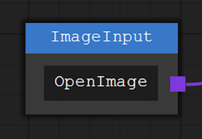

概述
那是一个冬季 在研究无线电安全的作者接触到了GNURadio 那是作者第一次接触到节点编辑器
"What? Excuse me... What's this?.. 这是什么鬼东西?..."
那是一个春季 不知道为什么 过完年整个世界都变了 大家被迫窝在家里 无聊至极的作者学起了Blender 那是作者第二次接触到节点编辑器
"Wo...原来这东西可以这么玩...真方便"
于是一些想法在作者脑中逐渐诞生 让作者有了想做一个这样的东西的想法
那是一个夏季 不知道为什么 作者又玩起了Davinci 那是作者第三次接触到节点编辑器 这一次的接触让作者对节点编辑器的好感倍增 作者瞬间觉得 只要是可以模块化流程化的功能 万物皆可节点化


本案例中只是提供了一个节点编辑器控件 并不包含节点列表 属性编辑器等 若后期有空再做一套完整的框架
节点编辑器
或许你未曾接触过节点编辑 但节点编辑的影子越来越多 尤其是在影视相关的一些设计类软件当中 Blender,C4D,Houdini,Davinci 等
节点编辑最大的好处就是可视化操作 将单一的功能点封装到节点之中 让用户通过节点布线来组合自己需要的逻辑 让整个流程可视化 而不是将你程序的整个执行流程固化在你的程序之中 当然在这之前你需要定义好节点的数据类型 因为数据类型无法兼容是不允许连线的 通常情况下同颜色的连接点表示数据类型相同
另一个好处 让开发者只需要注重单一的功能点开发 使得功能与功能之间的耦合度降低 开发者在节点中开发完成需要的功能 无需知道应该把数据交给谁或者怎么去传递数据 只需要将你的结果数据打包给你所继承的节点类 节点编辑器会自动完成数据的投递过程
STNodeEditor
STNodeEditor为节点容器 其中最重要的一个属性为Nodes里面包含了画布中能看到的所有节点
STNodeEditor有两套坐标系统 平常情况下使用最多的就直接是控件的坐标系统 需要在控件的什么位置绘图或者添加东西采用的都是相对控件左上角的坐标 但是在节点编辑器中的情况比较复杂 需要引入一个画布的概念 画布是可以移动缩放的 所以在绘图的时候依旧采用控件的坐标系统将带来很多的麻烦 所以为画布定义了一个坐标原点 在节点以及连线绘制的时候采用的是画布的坐标系统 当需要拖动画布位置的时候 改变画布原点的位置就好了 而内部节点的位置依旧不做变更 因为节点采用的坐标位置是相对画布原点的
当画布中Nodes没有元素时候 画布将处于重置状态无法缩放与移动 因为作者觉得这样的操作没有任何意义
属性
| 属性名称 | 类型 | 描述 |
| CanvasOffsetX | float | 获取画布原点相对于控件 X 方向上的偏移位置 |
| CanvasOffsetY | float | 获取画布原点相对于控件 Y 方向上的偏移位置 |
| CanvasOffset | PointF | 获取画布原点相对于控件偏移位置 |
| CanvasValidBounds | Rectangle | 获取画布中的有被用到的有效区域 |
| CanvasScale | float | 获取画布的缩放比例 |
| Curvature | float | 获取或设置 Option 之间连线的曲度 |
| Magnet | bool | 获取或设置移动画布中 Node 时候 是否启用磁铁效果 |
| ShowBorder | bool | 获取或设置移动画布中是否显示 Node 边框 |
| ShowGrid | bool | 获取或设置画布中是否绘制背景网格线条 |
| ShowLocation | bool | 获取或设置是否在画布边缘显示超出视角的 Node 位置信息 |
| Nodes | STNodeCollection | 获取画布中 Node 集合 |
| ActiveNode | STNode | 获取当前画布中被选中的活动 Node |
| HoverNode | STNode | 获取当前画布中鼠标悬停的 Node |
| GridColor | Color | 获取或设置绘制画布背景时 网格线条颜色 |
| BorderColor | Color | 获取或设置画布中 Node 边框颜色 |
| BorderHoverColor | Color | 获取或设置画布中悬停 Node 边框颜色 |
| BorderSelectColor | Color | 获取或设置画布中选中 Node 边框颜色 |
| BorderActiveColor | Color | 获取或设置画布中活动 Node 边框颜色 |
| MarkForeColor | Color | 获取或设置画布绘制 Node 标记详情采用的前景色 |
| MarkBackColor | Color | 获取或设置画布绘制 Node 标记详情采用的背景色 |
| MagnetLineColor | Color | 获取或设置画布中移动 Node 时候 磁铁标记线颜色 |
| SelectedRectangleColor | Color | 获取或设置画布中选择矩形区域的颜色 |
| HighLineColor | Color | 获取或设置画布中高亮连线的颜色 |
| LocationForeColor | Color | 获取或设置画布中边缘位置提示区域前景色 |
| LocationBackColor | Color | 获取或设置画布中边缘位置提示区域背景色 |
| UnknownTypeColor | Color | 获取或设置画布中当 Node 中 Option 数据类型无法确定时应当使用的颜色 |
| TypeColor | Dictionary<Type, Color> | 获取或设置画布中 Node 中 Option 数据类型预设颜色 |
| 属性名称 | 类型 | 描述 |
| m_pt_in_control | Point | 当前鼠标在控件中的实时位置 |
| m_pt_in_canvas | PointF | 当前鼠标在画布中的实时位置 |
| m_pt_down_in_control | Point | 鼠标点击时在控件上的位置 |
| m_pt_down_in_canvas | PointF | 鼠标点击时在画布中的位置 |
| m_pt_canvas_old | PointF | 用于鼠标点击移动画布时候 鼠标点下时候的画布坐标位置 |
| m_pt_dot_down | Point | 用于保存连线过程中保存点下 Option 的起点坐标 |
| m_option_down | STNodeOption | 用于保存连线过程中鼠标点下的起点Option 当MouseUp时候 确定是否连接此节点 |
-
TypeColor
- 此属性为当前STNodeEditor中所有的数据类型所对应的颜色 节点中所有的数据类型都应当包含在此集合中 即便有动态需要加载的未知类型的节点 那么对应的节点也应该在节点的OnOwnerChanged()中向容器提交自己数据类型以及对应颜色
若节点有单独对STNodeOption.DotColor设置值 则忽略该对照表中的颜色 即不为默认颜色Color.Transparent
- 此属性为当前STNodeEditor中所有的数据类型所对应的颜色 节点中所有的数据类型都应当包含在此集合中 即便有动态需要加载的未知类型的节点 那么对应的节点也应该在节点的OnOwnerChanged()中向容器提交自己数据类型以及对应颜色
-
UnknownTypeColor
- 若节点中并没有单独设置数据类型颜色且在TypeColor中无法匹配时候采用此值 所以将此特殊类型单独设置
可重载函数
| 当绘制背景网格线时候发生 | |
| void OnDrawGrid(DrawingTools dt, int nWidth, int nHeight) | |
| dt | 绘制工具 |
| nWidth | 需要绘制宽度 |
| nHeight | 需要绘制高度 |
| 当绘制 Node 时候发生 | |
| void OnDrawNode(DrawingTools dt, Rectangle rect) | |
| dt | 绘制工具 |
| rect | 可视画布区域大小 |
| 当绘制已连接路径时候发生 | |
| void OnDrawConnectedLine(DrawingTools dt) | |
| dt | 绘制工具 |
| 当绘制 Mark 详情信息时候发生 | |
| void OnDrawMark(DrawingTools dt) | |
| dt | 绘制工具 |
| 当移动 Node 时候 需要显示对齐参考线时候发生 | |
| void OnDrawMagnetLine(DrawingTools dt, MagnetInfo mi) | |
| dt | 绘制工具 |
| mi | 匹配的磁铁信息 |
| 绘制选择的矩形区域 | |
| void OnDrawSelectedRectangle(DrawingTools dt, RectangleF rectf) | |
| dt | 绘制工具 |
| rectf | 位于控件上的矩形区域 |
| 绘制超出视觉区域的 Node 位置提示信息 | |
| void OnDrawNodeOutLocation(DrawingTools dt, Size sz, List<Point> lstPts) | |
| dt | 绘制工具 |
| sz | 提示框边距 |
| lstPts | 超出视觉区域的 Node 位置信息 |
| 绘制提示信息 | |
| void OnDrawAlert(DrawingTools dt, Rectangle rect, string strText, Color foreColor, Color backColor, AlertLocation al) | |
| dt | 绘制工具 |
| rect | 需要绘制区域 |
| strText | 需要绘制文本 |
| foreColor | 信息前景色 |
| backColor | 信息背景色 |
| al | 信息位置 |
| 获取提示信息需要绘制的矩形区域 | |
| Rectangle GetAlertRectangle(Graphics g, string strText, AlertLocation al) | |
| g | 绘图表面 |
| strText | 需要绘制文本 |
| al | 信息位置 |
| 通过画布坐标进行寻找 | |
| NodeFindInfo FindNodeFromPoint(PointF pt) | |
| pt | 画布中的坐标 |
| 获取已经被选择的 Node 集合 | |
| STNode[] GetSelectedNode() | |
| 将画布坐标转换为控件坐标 | |
| float CanvasToControl(XXX xxx) | |
| xxx | Rectangle,RectangleF,Point,PointF... |
| 将控件坐标转换为画布坐标 | |
| float ControlToCanvas(XXX xxx) | |
| xxx | Rectangle,RectangleF,Point,PointF... |
| 移动画布原点坐标到指定的控件坐标位置 | |
| void MoveCanvas(float x, float y, bool bAnimation, CanvasMoveArgs ma) | |
| x | X 坐标 |
| y | Y 坐标 |
| bAnimation | 移动过程中是否启动动画效果 |
| ma | 指定需要修改的坐标参数 |
| 缩放画布 | |
| void ScaleCanvas(float f, float x, float y) | |
| f | 缩放比例 |
| x | 以指定控件坐标 X 为中心进行缩放 |
| y | 以指定控件坐标 Y 为中心进行缩放 |
| 获取当前已连接的 Option 对应关系 | |
| ConnectionInfo[] GetConnectionInfo() | |
| 判断两个 Node 之间是否存在连接路径 | |
| static bool CanFindNodePath(STNode nodeStart, STNode nodeFind) | |
| nodeStart | 起始 Node |
| nodeFind | 目标 Node |
| 获取画布中指定矩形区域图像 | |
| Image GetCanvasImage(Rectangle rect, float fScale) | |
| rect | 画布中指定的矩形区域 |
| fScale | 缩放比例 |
| 保存画布中的类容到文件中 | |
| void SaveCanvas(string strFileName) | |
| strFileName | 文件路径 |
| 保存画布中的类容到数据流 | |
| void SaveCanvas(Stream s) | |
| s | 数据流对象 |
| 获取画布中内容二进制数据 | |
| byte[] GetCanvasData() | |
| 加载程序集 | |
| bool LoadAssembly(string strFile) | |
| 返回值 | 此文件中是否有类型被加载 |
| 加载程序集 | |
| int LoadAssembly(string[] strFiles) | |
| 返回值 | 存在STNode类型的文件的个数 |
| 编辑器中的节点并不一定来自自身程序集 也可能包含在其他程序集中 这时候需提前加载对应程序集 对应的STNode才能正确的从文件或者数据中动态加载到画布类容 | |
| 获取当前编辑器中已加载的Node类型 | |
| Type[] GetTypes() | |
| 从文件中加载数据 | |
| void LoadCanvas(string strFileName) | |
| strFileName | 文件路径 |
| 从二进制加载数据 | |
| void LoadCanvas(byte[] byData) | |
| byData | 二进制数据 |
| 从数据流中加载数据 | |
| void LoadCanvas(Stream s) | |
| s | 数据流对象 |
| 在画布中显示提示信息 | |
| void ShowAlert(string strText, Color foreColor, Color backColor, int nTime, AlertLocation al, bool bRedraw) | |
| strText | 要显示的信息 |
| foreColor | 信息前景色 |
| backColor | 信息背景色 |
| nTime | 信息持续时间 |
| al | 信息要显示的位置 |
| bRedraw | 是否立即重绘 |
| 设置画布中活动的节点 | |
| STNode SetActiveNode(STNode node) | |
| STNode | 需要被设置为活动的节点 |
| 返回值 | 设置前的活动节点 |
| 向编辑器中添加默认数据类型颜色 | |
| SetTypeColor(Type t, Color clr) | |
| t | 数据类型 |
| clr | 对应颜色 |
事件
| SelectedChanged | 选择的节点发生变化时候发生 |
| HoverChanged | 悬停的节点发生变化时候发生 |
| NodeAdded | 当节点被添加时候发生 |
| NodeRemoved | 当节点被移除时候发生 |
| CanvasMoved | 移动画布原点时候发生 |
| CanvasScaled | 缩放画布时候发生 |
| OptionConnected | 连接节点选项时候发生 |
| OptionDisConnected | 断开节点选项时候发生 |
| OptionConnecting | 正在连接节点选项时候发生 |
| OptionDisConnecting | 正在断开节点选项时候发生 |
-
Option(Dis)Connected
- 此事件触发时并不代表当前画布中的节点连线成功 请通过获取事件参数中的Status字段进行判断
但是STNodeOption.Connected事件是成功后才触发 之所以要这样设计是因为考虑到 对于STNodeEditor来说 它需要知道一个连接的状态 即使连接不成功也应当告知前端用户为什么会连接不成功 所以失败和成功都会触发事件
- 此事件触发时并不代表当前画布中的节点连线成功 请通过获取事件参数中的Status字段进行判断
-
Option(Dis)Connecting
- 此事件是在连接或者断开连接正在发生的时候触发 可通过事件参数Continue来决定是否继续或者停止操作
STNode
STNode为抽象类 不可实例化 需要用户自己继承重写
STNode有三个比较重要的属性InputOptionsOutputOptionsControls
若把STNodeEditor类比成桌面 那么STNode就可以类比成一个窗体 虽然作者在节点中提供了Controls集合 但是作者没有提供任何的一个封装好的控件 只提供了一个STNodeControl基类 若有需要用户可继承此类绘制自己需要的控件
继承STNode必须提供空参构造器 否则对节点进行保存后无法还原节点 因为还原过程并非序列化 而是通过反射重新构造对象
属性
| 属性名称 | 类型 | 描述 |
| Owner | STNodeEditor | 获取当前 Node 所有者 |
| IsSelected | bool | 获取或设置 Node 是否处于被选中状态 |
| IsActive | bool | 获取 Node 是否处于活动状态 |
| TitleColor | Color | 获取或设置标题背景颜色 |
| MarkColor | Color | 获取或设置标记信息背景颜色 |
| ForeColor | Color | 获取或设置当前 Node 前景色 |
| BackColor | Color | 获取或设置当前 Node 背景色 |
| Title | string | 获取或设置 Node 标题 |
| Mark | string | 获取或设置 Node 标记信息 |
| MarkLines | string[] | 获取 Node 标记信息行数据 |
| Left | int | 获取或设置 Node 左边坐标 |
| Top | int | 获取或设置 Node 上边坐标 |
| Width | int | 获取或设置 Node 宽度 |
| Height | int | 获取或设置 Node 高度 |
| Right | int | 获取 Node 右边边坐标 |
| Bottom | int | 获取 Node 下边坐标 |
| Rectangle | Rectangle | 获取 Node 矩形区域 |
| TitleRectangle | Rectangle | 获取 Node 标题矩形区域 |
| MarkRectangle | Rectangle | 获取 Node 标记矩形区域 |
| TitleHeight | int | 获取或设置 Node 标题高度 |
| InputOptions | STNodeOptionCollection | 获取输入选项集合 |
| InputOptionsCount | int | 获取输入选项集合个数 |
| OutputOptions | STNodeOptionCollection | 获取输出选项 |
| OutputOptionsCount | int | 获取输出选项个数 |
| Controls | STNodeControlCollection | 获取 Node 所包含的控件集合 |
| ControlsCount | int | 获取 Node 所包含的控件集合个数 |
| Location | Point | 获取 Node 坐标位置 |
| Size | Size | 获取 Node 大小 |
| Font | Font | 获取或设置 Node 字体 |
| LockOption | bool | 获取或设置是否锁定Option选项 锁定后不在接受连接 |
| LockLocation | bool | 获取或设置是否锁定Node位置 锁定后不可移动 |
| ContextMenuStrip | ContextMenuStrip | 获取或设置当前Node 上下文菜单 |
| Tag | object | 获取或设置用户自定义保存的数据 |
-
Lock(Option/Location)

LockOption被设定后左上角会出现一把锁 表示节点内所有选项不再接受连接 但可以与其他节点选项断开连接 但是其他节点也同为被锁定状态 则无法断开
LockLocation被设定后右上角会出现一枚图钉 表示节点位置不再接受设置
受保护字段
| 属性名称 | 类型 | 描述 |
| m_ctrl_active | STNodeControl | 当前Node中 活动的控件 |
| m_ctrl_hover | STNodeControl | 当前Node中 悬停的控件 |
在上述属性中除了MarkLeftTop其余均为只读属性 被protected所修饰 仅继承STNode后才可访问 不然作者觉得太危险了 比如下面这段代码
NodeXXX.Owner.Nodes[nIndex].InputOptions.RemoveAt(0);
节点都是模块化的 可能会有不同的人来做开发 甚至是以插件的方式提供 如果大家都遵守约定那将很好 可如果一旦有人不遵守约定 或者出现意外情况 那么就可能出现跨节点操作 破坏掉原本一个正常的节点 如果确实有需要请更改源代码
可重载函数
| 当Node被构造时候发生 | |
| void OnCreate() | |
| 当所有者发生改变时候发生 | |
| void OnOwnerChanged() | |
| 当选中状态改变时候发生 | |
| void OnSelectedChanged() | |
| 当活动状态改变时候发生 | |
| void OnActiveChanged() | |
| 绘制整个Node | |
| void OnDrawNode(DrawingTools dt) | |
| dt | 绘制工具 |
| 绘制Node标题部分 | |
| void OnDrawTitle(DrawingTools dt) | |
| dt | 绘制工具 |
| 绘制Node主体部分 除去标题部分 | |
| void OnDrawBody(DrawingTools dt) | |
| dt | 绘制工具 |
| 绘制标记信息 | |
| void OnDrawMark(DrawingTools dt) | |
| dt | 绘制工具 |
| 当计算Option位置时候发生 | |
| Point OnSetOptionLocation(STNodeOption op) | |
| op | 需要计算的Option |
| 绘制选项连线的点 | |
| void OnDrawOptionDot(DrawingTools dt, STNodeOption op) | |
| dt | 绘制工具 |
| op | 指定的选项 |
| 计算当前Node所需要的矩形区域 | |
| Size OnBuildNodeSize(DrawingTools dt) | |
| dt | 绘制工具 |
| 若需要自己重绘Node 则应当重写此函数 以确定绘图区域大小
返回的大小并不会限制绘制区域 任然可以在此区域之外绘制 但是并不会被STNodeEditor所接受 并触发对应事件 |
|
| 计算当前Mark所需要的矩形区域 | |
| Rectangle OnBuildMarkRectangle(DrawingTools dt) | |
| dt | 绘制工具 |
| 若需要自己重绘Mark 则应当重写此函数 以确定绘图区域大小
返回的大小并不会限制绘制区域 任然可以在此区域之外绘制 但是并不会被STNodeEditor所接受 并触发对应事件 |
|
| 当需要保存时候 此Node有哪些需要额外保存的数据 | |
| void OnSaveNode(Dictionary<string, byte[]>) | |
| 保存时并不会进行序列化 仅自动保存Mark属性 还原时候仅重新通过空参数构造器创建此Node
然后调用OnLoadNode()将保存的数据进行还原 | |
| void OnLoadNode(Dictionary | |
| dic | 保存时候的数据 |
protected override void OnSaveNode(Dictionary<string, byte[]>) { dic.Add("count", BitConverter.GetBytes(this.InputOptionsCount)); } protected internal override void OnLoadNode(Dictionary<string, byte[]> dic) { int nCount = BitConverter.ToInt32(dic["count"], 0); while (this.InputOptionsCount < nCount && this.InputOptionsCount != nCount) this.Addhub(); }

上面代码片段为STNodeHub重载 当需要保存时候此节点需要保存当前已拥有的行数 还原的时候需要将行数还原 因为新构造的节点只有一行 若上面已有连线关系的时候只有一行可能无法正常还原连线关系
protected override void OnSaveNode(Dictionary<string, byte[]>) { dic.Add("file", Encoding.UTF8.GetBytes(m_str_file)); } protected override void OnLoadNode(Dictionary<string, byte[]> dic) { m_str_file = Encoding.UTF8.GetString(dic["file"]); if (System.IO.File.Exists(m_str_file)) { //如果文件存在加载并投递数据 m_option_out.TransferData(Image.FromFile(m_str_file)); } }

上面代码片段为DEMO中STNodeImageInput重载 因为保存时候 需要把已经打开的文件路劲一起保存 还原的时候再次打开文件并传递数据
其他重载函数
OnGotFocusOnLostFocusOnMouse***OnKey***OnMove
公开函数| 重绘Node | |
| void Invalidate() | |
| 重绘 Node 指定区域 | |
| void Invalidate(Rectangle rect) | |
| rect | Node 指定区域 |
| 获取此Node所包含的输入Option集合 | |
| STNodeOption[] GetInputOptions() | |
| 获取此Node所包含的输出Option集合 | |
| STNodeOption[] GetOutputOptions() | |
| 设置Node的选中状态 | |
| void SetSelected(bool bSelected, bool bRedraw) | |
| bSelected | 是否选中 |
| bRedraw | 是否立即重绘 |
| 此函数参照System.Windows.Forms.Control | |
| XXX Begin/Invoke(Delegate method, params object[] args) | |
若无特殊需求 仅仅需要的是输入输出点就足够了 那么无需用户进行重绘操作 上图 "Demo_Node" 就是默认的绘制 用户只需要在节点中加入需要的输入输出选项即可
protected override void OnCreate() { base.OnCreate(); this.InputOptions.Add(new STNodeOption("Input", typeof(string), false)); this.InputOptions.Add(new STNodeOption("SingleNode", typeof(Image), true)); this.InputOptions.Add(new STNodeOption("SingleNode", typeof(Icon), true)); this.OutputOptions.Add(new STNodeOption("output", typeof(string), false)); this.OutputOptions.Add(new STNodeOption("Single", typeof(string), true)); this.Title = "Demo_Node"; }
上面代码片段为 "Demo_Node" 的OnCreate重载 加入了三个输入节点和两个输出节点 (当然上面的代码并没有绑定STNodeOption的事件) 若需要自定义绘制参考Demo代码
STNodeOption
STNodeOption为STNode下选项的连接点
TransferData(object data)是关键函数 当被调用时数据将自动传递到与它相连的所有选项中 并触发目标选项的DataTransfer事件
此函数是节点选项之间数据传递的核心
属性
| 属性名称 | 类型 | 描述 |
| Owner | STNode | 获取当前 Option 所属的 Node |
| IsSingle | bool | 获取当前 Option 是否仅能被连接一次 |
| IsInput | bool | 获取当前 Option 是否是输入选项 |
| TextColor | Color | 获取或设置当前 Option 文本的颜色 |
| DotColor | Color | 获取或设置当前 Option 连接点的颜色 |
| Text | string | 获取或设置当前 Option 显示文本 |
| DotLeft | int | 获取当前 Option 连接点的左边坐标 |
| DotTop | int | 获取当前 Option 连接点的上边坐标 |
| DotSize | int | 获取当前 Option 连接点的宽度 |
| Data | object | 获取或者设置当前 Option 所包含的数据 |
| DataType | Type | 获取当前 Option 数据类型 |
| DotRectangle | Rectangle | 获取当前 Option 连接点的区域 |
| ConnectionCount | int | 获取当前 Option 被连接的个数 |
| 属性名称 | 类型 | 描述 |
| m_hs_connected | HashSet<STNodeOption> | 保存已经被连接的点 |
上述中不带 "设置" 二字的都为只读属性 即便是继承至STNodeOption
因为作者认为STNodeOption最大的用途应该是作为节点之间连线的载体和事件的触发 而对于其他外观需求并不是很重要
-
DotColor
- 若设置此值 则绘制时候以此值为准 否则查询STNodeEditor.TypeColor字段进行颜色匹配
-
DataType
- 此选项允许被连接或者输出的数据类型 若类型无法被兼容 无法完成连线
对于输入类型的节点 每个与其参与连接的输出节点的数据类型必须与输入节点的数据类型相同 或者为输入节点数据类型的子类
在使用过程中作者并不建议子类和父类混合使用 对于输入或者输出的数据类型应当统一为子类或者父类 若混合使用将在一定程度上产生歧义 比如父类颜色被设定成红色子类颜色被设定成黄色 那么在UI上会给人一种无法被连接的错觉 应当统一数据类型所对应的颜色
当数据类型为object时 则表示可兼容所有数据类型且以 空心 状态绘制
上图中的 "HUB" 节点为内置节点 其节点类型为STNodeHub默认状态下其输入输出点都为object类型 表示可兼容所有类型 且重载了ConnectOption(STNodeOption op)与CanConnect(STNodeOption op)函数 一旦被接入或者被接入时则会变更为和对应的数据类型进行连接 若连接成功另则会再增加一行类型为object的新行
但是决定输入类型的DataType属性被internal修饰 所以若你即使继承至STNodeOption也无法改写 只能通过构造器传递 因为处于连线状态突然变更类型会带来一系列的问题 即便编辑器发现变更时候可以选择自动断开所有不相符的连接 但是作者并不建议或者打算这么做 若有此需求请更改源代码
- 此选项允许被连接或者输出的数据类型 若类型无法被兼容 无法完成连线
构造器
| 构造一个 Option | |
| STNodeOption(string strText, Type dataType, bool bSingle) | |
| strText | 显示文本 |
| dataType | 数据类型 |
| bSingle | 是否为单连接 若为true则以圆形绘制 否则方形 |
可重载函数
OnConnectedOnConnectingOnDisConnectedOnDisConnectingOnDataTransfer
公开函数
| 当前 Option 连接目标 Option | |
| virtual ConnectionStatus ConnectOption(STNodeOption op) | |
| op | 需要连接的 Option |
| 检测当前 Option 是否可以连接目标 Option | |
| virtual ConnectionStatus CanConnect(STNodeOption op) | |
| op | 需要连接的 Option |
| 当前Option具备连接目标Option的条件 不代表目标Option也具备连当前Option的条件 | |
| 当前 Option 断开目标 Option | |
| virtual bool DisConnection(STNodeOption op) | |
| op | 需要断开的 Option |
| 断开当前 Option 的所有连接 | |
| void DisConnectionAll() | |
| 获取当前 Option 所连接的 Option 集合 | |
| List<STNodeOption> GetConnectedOption() | |
| 向当前 Option 所连接的所有 Option 投递数据 | |
| void TransferData() | |
| 向当前 Option 所连接的所有 Option 投递数据 | |
| void TransferData(object data) | |
| data | 需要投递的数据 |
事件
| Connected | 当被连接时候发生 |
| Connecting | 当连接正在被连接时发生 |
| Disconnected | 当被断开时候发生 |
| DisConnecting | 当连接正在被断开时发生 |
| DataTransfer | 当有数据传递时候发生 |
当Connected与DisConnected触发的同时DataTransfer也会触发
所以通常情况下DataTransfer事件足够使用 通过对事件参数Status可得到 当前事件触发时候目标Option与当前Option的连线关系
当一个连线完成或者断开时候 输入和输出STNodeOption都将触发事件 因为无论连接还是断开都应该是相对的需要两个节点共同参与 而通常情况下只需要对输入节点进行事件绑定即可
STNodeOptionEventArgs
STNodeOptionEventArgs为包含了STNodeOption相关事件的事件参数
属性
| 属性名称 | 类型 | 描述 |
| TargetOption | STNodeOption | 触发此事件的对应Option |
| Status | ConnectionStatus | Option之间的连线状态 |
| IsSponsor | bool | 是否为此次行为的发起者 |
STNodeControl
关于此类不做过多介绍 可将其视为System.Windows.Forms.Control虽然提供的属性和事件并没有太多 但是作者认为也应当足够了 若还有其他需求请自行修改源代码
Demo
public class STNodeButton : STNodeControl //自定义一个Button控件 { private bool m_isHover; protected override void OnMouseEnter(EventArgs e) { base.OnMouseEnter(e); m_isHover = true; this.Invalidate(); } protected override void OnMouseLeave(EventArgs e) { base.OnMouseLeave(e); m_isHover = false; this.Invalidate(); } protected override void OnPaint(DrawingTools dt) { //base.OnPaint(dt); Graphics g = dt.Graphics; SolidBrush brush = dt.SolidBrush; brush.Color = m_isHover ? Color.DodgerBlue : this.BackColor; g.FillRectangle(brush, 0, 0, this.Width, this.Height); g.DrawString(this.Text, this.Font, Brushes.White, this.ClientRectangle, base.m_sf); } }
public class STNodeImageInput : STNode { private STNodeOption m_option_out; protected override void OnCreate() { base.OnCreate(); this.Title = "ImageInput"; m_option_out = new STNodeOption("", typeof(Image), false); this.OutputOptions.Add(m_option_out); STNodeButton btn = new STNodeButton(); btn.Left = 10; btn.Top = 10; btn.Text = "OpenImage"; btn.MouseClick += new MouseEventHandler(btn_MouseClick); this.Controls.Add(btn); } //...other code }
上面代码片段为 DEMO 中 "ImageInput" 节点与自定义 Button 控件代码 以上代码演示了如何自定义与使用一个控件 可以看到与System.Windows.Forms.Control差异并不是很大 多以这里并不做过多介绍